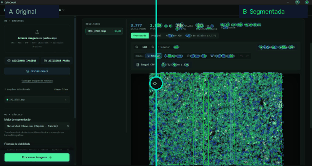
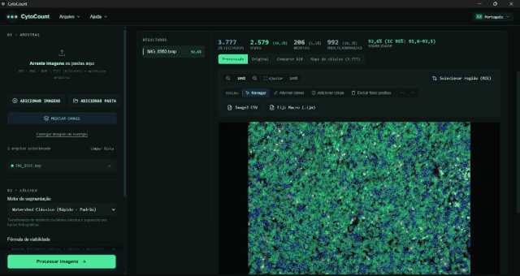

Software desktop nativo e ultrarrápido (Rust + Python) para microscopia confocal e fluorescência. Segmentação de núcleos e citoplasma (verde), viabilidade multi-canal com IC 95% Wilson e exportação em 300 DPI pronta para publicação científica.
Processamento vetorial em tempo real com inspeção visual profunda da segmentação celular.

Arraste a cortina vertical interativa para comparar instantaneamente o canal original fluorescente puro e os contornos celulares segmentados em tempo real.
Identificação secundária Voronoi guiada pelos núcleos (DAPI) com expansão restrita ao sinal citoplasmático verde, calculando a área nuclear, citoplasmática e a razão N:C.

Classificação multi-canal (Vivas em verde, Mortas em amarelo, Indeterminadas) com intervalo de confiança estatístico de Wilson a 95% e auditoria de edições manuais.
Unindo velocidade de processamento nativo em C++/Rust à sofisticação estatística de bioimagem.
Dois modos analíticos independentes na interface. O modo Citoplasma foca estritamente em morfometria e corpos celulares verdes, sem interferir no pipeline de viabilidade.
Escolha entre Watershed Clássico (alta velocidade), StarDist 2D (polígonos estrelados e NMS) e Cellpose 2D (fluxo vetorial de gradientes).
Calibre a resolução óptica em µm/pixel com régua automática na exportação para publicação, garantindo conformidade com padrões de submissão da Nature, Elsevier e Cell.
A expansão secundária por Voronoi/Watershed geodésico impede que células adjacentes invadam o domínio vizinho. Cada célula recebe medidas exatas de área nuclear (px² e µm²), área citoplasmática e proporção N:C, exportáveis em tabelas CSV prontas para análise no R e GraphPad Prism.
Processamento totalmente local. Dados de microscopia confidenciais nunca saem do seu computador ou rede do laboratório.

Chega de colar imagens escuras com molduras cinzas no PowerPoint ou no Word. O CytoCount v1.1.0 possui presets rápidos de exportação em 1 clique:
Cite o CytoCount em sua dissertação, tese ou artigo científico utilizando o DOI oficial indexado no Zenodo/CERN:
@software{candido_2026_cytocount,
author = {Cândido, Gabriel},
title = {{CytoCount: High-Throughput Automated Cell Counting,
Cytoplasmic Morphometry and Viability Analysis for
Fluorescence Microscopy}},
month = nov,
year = 2026,
publisher = {Zenodo},
version = {v1.1.0},
doi = {10.5281/zenodo.24224693},
url = {https://doi.org/10.5281/zenodo.24224693}
}